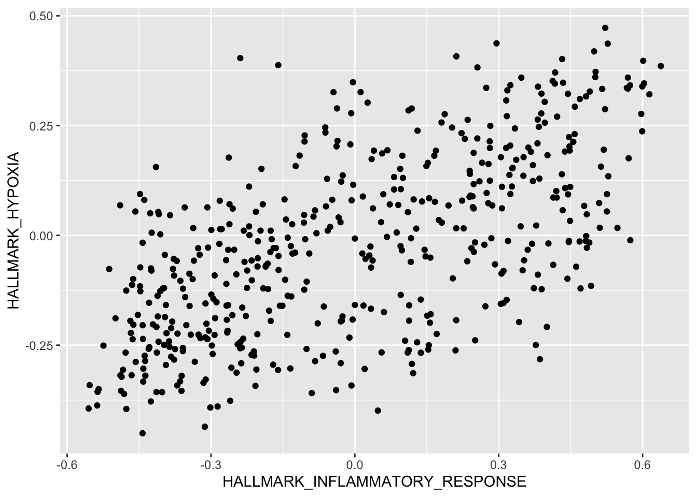

Exercises
Research with Computational Biology (ReComBio)
September 7th, 2024
Part 1: Introduction to R and the R Syntax
Chapter 3: Data visualization
Load libraries
library(ggplot2)
library(maditr)
library(dplyr)
Load dataframe
r2_gse62564_GSVA_Metadata <- readRDS("../../ReComBio Scientific/ReComBio Book English/recombio bookdown/data/r2_gse62564_GSVA_Metadata.rds")
Make Variables of Numeric Type
r2_gse62564_GSVA_Metadata <- r2_gse62564_GSVA_Metadata %>%
mutate_at("HALLMARK_HYPOXIA", as.numeric) %>%
mutate_at("HALLMARK_INFLAMMATORY_RESPONSE", as.numeric) %>%
mutate_at("ADRN_Norm_vs_Hypo_Up_554.txt", as.numeric) %>%
mutate_at("ADRN_Norm_vs_Hypo_Down_635.txt", as.numeric)
Question 1
Use R plot functions to visualize the correlation between Hallmark Hypoxia and Hallmark Inflammatory Response
Solution:
HALLMARK_INFLAMMATORY_RESPONSE vs. HALLMARK_HYPOXIA
qplot(HALLMARK_INFLAMMATORY_RESPONSE, HALLMARK_HYPOXIA,
data = r2_gse62564_GSVA_Metadata,
#colour=quantile,
ylab = "HALLMARK_HYPOXIA",
xlab = "HALLMARK_INFLAMMATORY_RESPONSE")
Question 2
Use R plot functions to visualize the correlation between Hallmark Hypoxia and Hallmark Inflammatory Response
Solution:
HALLMARK_INFLAMMATORY_RESPONSE vs. ADRN_Norm_vs_Hypo_Up_554.txt
qplot(HALLMARK_INFLAMMATORY_RESPONSE, ADRN_Norm_vs_Hypo_Up_554.txt,
data = r2_gse62564_GSVA_Metadata,
# colour=quantile,
xlab = "HALLMARK_INFLAMMATORY_RESPONSE",
ylab = "ADRN_Norm_vs_Hypo_Up_554.txt")
Question 3
Use R plot functions to visualize the correlation between Hallmark Hypoxia and Hallmark Inflammatory Response
Solution:
HALLMARK_INFLAMMATORY_RESPONSE vs. ADRN_Norm_vs_Hypo_Down_635.txt
qplot(HALLMARK_INFLAMMATORY_RESPONSE, ADRN_Norm_vs_Hypo_Down_635.txt,
data = r2_gse62564_GSVA_Metadata,
# colour=quantile,
ylab = "ADRN_Norm_vs_Hypo_Down_635.txt",
xlab = "HALLMARK_INFLAMMATORY_RESPONSE")
Question 4
From the analysis of questions 1-3, choose the correct option:
HALLMARK_INFLAMMATORY_RESPONSE and HALLMARK_HYPOXIA have a positive correlation because hypoxia is always beneficial in the tumor microenvironment
HALLMARK_INFLAMMATORY_RESPONSE and ADRN_Norm_vs_Hypo_Up_554.txt have a positive correlation because hypoxia upregulation in this case, is beneficial in the tumor microenvironment
HALLMARK_INFLAMMATORY_RESPONSE and ADRN_Norm_vs_Hypo_Up_554.txt have a positive correlation because hypoxia upregulation has a negative impact on survival
HALLMARK_INFLAMMATORY_RESPONSE and ADRN_Norm_vs_Hypo_Down_635.txt have a negative correlation because hypoxia upregulation in this case, is not beneficial in the tumor microenvironment
Question 5
Which gene expression group has worse survival probability?
- High HIF1A expression
- Low HIF1A expression
Question 6
Which phenotype score group has worse survival probability?
- High Hallmark Hypoxia
- Low Hallmark Hypoxia
Question 7
Which phenotype score group has worse survival probability?
- High Hallmark Inflammatory Response
- Low Hallmark Inflammatory Response
Question 8
Plot the survival curve of the MYCN status variable. Which MYCN status has worse survival outcome?
- Individuals with MYCN amplification
- Individuals without MYCN amplification
- The MYCN group with unknown MYCN status
Question 9
Plot the survival curve of the INSS stage variable. Which INSS stage has worse survival outcome?
- INSS Stage I
- INSS Stage II
- INSS Stage III
- INSS Stage IV
- INSS Stage IV A
Question 10
Mark TRUE or FALSE.
- The higher the age at diagnosis the greater the HIF1A expression difference between HR and non-HR
- The lower the age at diagnosis the greater the HIF1A expression difference between HR and non-HR
Part 2: Machine Learning
Chapter 1: RNA Sequencing (RNA-Seq)
Question 1
What is a transcriptome?
It is the complete set of transcripts in a cell, and their quantity, for a specific developmental stage or physiological condition.
It is the complete set of proteins in a cell, and their quantity, for a specific developmental stage or physiological condition.
It is the complete set of interfering RNAs in a cell, and their quantity, for a specific developmental stage or physiological condition.
It is the complete set of ribosomal molecules in a cell, and their quantity, for a specific developmental stage or physiological condition.
Question 2
What is the main purpose of the transcriptome analysis?
To write machine learning algorithms using gene expression quantification.
To complete sequencing of the sets of proteins in a cell, and their quantity, for a specific developmental stage or physiological condition.
To interpret the functional elements of the genome and reveal the molecular constituents of cells and tissues, and the development and diseases.
To understand the ribosomal molecules in a cell, and their quantity.
Question 3
Which technology has been used longer to measure gene expression?
RNA-Seq.
Microarrays.
CRISPR/Cas9.
X-ray crystallography.
Question 4
Mark the option below that contains a useful application for isolation of circulating DNA and RNA for the purpose of longitudinal patient interrogation.
Liquid biopsy
Tumor biopsy
Tissue biopsy.
Mammalian cell biopsy.
X-ray crystallography measurements.
Question 4
What of the options below are generally not challenges in an RNA sequencing set-up?
Library construction.
Methods to store, retrieve and process large amounts of data.
Sequencing coverage and cost.
mRNA isolation.
Question 5
Which alternative depicts an alingment file format?
Fasta file.
SAM file.
VCF file.
Fastq file.
BCF file.
Question 6
What are the correct steps taken in a RNA-Seq analysis pipeline?
Wet lab experiment -> Laboratory or Field Experiment -> Bioinformatic Processing -> biological inference.
Laboratory or field experiment -> Wet Lab Experiment -> Bioinformatic Processing -> Biological inference.
Bioinformatic Processing -> Wet Lab Experiment -> Laboratory or field experiment -> Biological inference.
Biological inference -> Bioinformatic Processing -> Wet Lab Experiment -> Laboratory or field experiment.
Question 7
Which R package did we use to perform the differential expression step in the transcriptome analysis?
DESeq2.
ggplot2.
dplyr.
pheatmap.
clusterProfiler.
Question 8
Which R package did we use to perform the enrichment analysis step in the transcriptome analysis?
DESeq2.
ggplot2.
dplyr.
pheatmap.
clusterProfiler.
Question 9
Which alternative contains factors affecting gene expression levels that need to be normalized?
Sequencing depth only.
Gene length only.
Only RNA isoform composition.
Only sequencing depth and gene length.
Sequencing depth, gene length and RNA isoform composition.
Chapter 2: Classification
Question 1
How can you predict what label a new patient that was sequenced using the UCSC nanopore technology will have using the logistic regression model constructed in R?
I can build a vector to provide as input to R so that the model can use the parameters it calculated to make the prediction
If I have more than 2 patients to predict, I can build a dataframe to input to R
It is not possible to know if a patient has high risk neuroblastoma disease without doing a FISH (Fluorescence in situ hybridization) and understanding if the person has MYCN amplification
Question 2
How can you know if a model represents a good indicator for the high risk status of a patient?
If the model has high accuracy
If the model has medium accuracy
If the model has low accuracy
Question 3
Write a command to input information about the predictor variables of a patient into R. To come up with a solution, please discuss the strategy to solve this problem in groups in breakout rooms. Please use 10-15 min to discuss a solution.
- Hint: Use notebook “Classification Using a Logistic Regression Model”
- Please describe a solution in words (human language)
Question 4
Write a command to predict the high risk label for the patient based in the patient’s gene expression pattern. To come up with a solution, please discuss the strategy to solve this problem in groups in breakout rooms. Please use 10-15 min to discuss a solution.
Hint 1: Which chunks in the notebook help to explain a possible solution?
Hint 2: Look at the functions that can possibly present a solution?
Please describe the solution in pseudocode (human language + computer language merged)
Question 5
Write a command to predict the high risk label for the patient based in the patient’s gene expression pattern. To come up with a solution, please discuss the strategy to solve this problem in groups. Please use 10-15 min to discuss a solution.
Hint 1: Which data structures can you use to input the data into the R environment? A dataframe? A vector? A character?
Please present the solution in a command or algorithm (computer language)
Question 6
Dr. Waterman, who participated in the Summer Bioiformatics Bridge Course a couple years ago, has completed a round of experiments aiming to use the classification model that we developed for the neuroblastoma labels using the Kokak dataset with n=498 patients. Dr. Waterman generated 22 phenotype scores for the set of 105 patients that he assists. The dataframe with the scores are in the data folder of the google drive of the course:
https://drive.google.com/file/d/1Bs6uDvc6i59l5JAjlPbVF7IgrNG5DWfK/view?usp=share_link
Or visit the data folder on Google Drive:
https://drive.google.com/drive/folders/1fr7SkOqMqOqQIW5ttjblGkPHCJY2HDJv?usp=sharing
The dataframe is the file gse73517geo105_GSVA_Metadata_selected.csv in the shared folder.
- If he wants to determine the patients that are high risk and the patients that are low risk, how should he proceed?
- Calculate the accuracy of the model that we trained using the Kocak data, using this new sample set provided to us by Dr. Waterman.
- Is this a good the accuracy for the logistic regression model that we developed?
Hint 1: Use the Waterman dataset as new data in the Machine Learning Classification notebook.
Hint 2: Construct class prediction and probabilities for the Westerman dataset.
Hint 3: Construct the results for westermand dataset using the class prediction and class probabilities for the Westerman dataset.
Part 3: DNA Sequencing and Introduction to the Terminal
Chapter 1: DNA Sequencing
Question 1
Watch the video about DNA sequencing technologies that was based on the Shendure et al., 2017 paper, from minutes 14:30 to 15:30. What is another technical name for Next Generation Sequencing (NGS) technologies?
Question 2
Now watch the video from 19:06 - 22:37. Which step is responsible for the increased amounts of DNA necessary for DNA sequencing?
Question 3
According to Shendure et al., 2017, how many and what are the names of the DNA sequencing technologies?
Question 4
What is the name of the process that allows bacteria to incorporate DNA into own their bacterial cells?
Question 5
What was the main clinical application of DNA sequencing technologies discussed by Shendure et al., 2017 in their paper?
Question 6
According to Shendure, please identify at least one chemical event in the machanics of DNA sequencing.
Question 7
According to Shendure, please identify at least one significant event in history of DNA sequencing.
Chapter 2: Introductory Commands in Command Line or Terminal
Use the echo command to print a greeting to the class like this one:
echo "Print a greeting to the class:"## Print a greeting to the class:
Now print your greeting message. Insert the message using the echo command:
echo " "
We can define a variable
test_variable=this_file
and now print the name of the variable also using the echo command:
test_variable=this_file
echo $test_variable## this_file
Check files that are present in the current directory:
ls## 02-variant_call_pipeline.Rmd
## 2024-bioinfo-bridge-course
## README.md
## _site
## _site.yml
## about.Rmd
## align-extract-counts.Rmd
## assignment-dates.Rmd
## bioinformatics-bridge-course_2024.Rproj
## certificates
## data
## download_sequences.Rmd
## edited_videos
## exercises
## exercises.Rmd
## exercises_files
## feedback
## final-presentations.Rmd
## images
## index.Rmd
## key_pairs
## last_day
## not_ready_to_render
## notebooks
## papers
## pdf
## recordings.Rmd
## scripts
## slides
## transcriptomics analysis.Rmd
## videos.Rmd
In the previous chunk there are files and folders that are present in that directory. I will print the files again with an echo message so it is more clear what was the command and what was the output:
echo "List the files. These are the files inside this directory:"
ls## List the files. These are the files inside this directory:
## 02-variant_call_pipeline.Rmd
## 2024-bioinfo-bridge-course
## README.md
## _site
## _site.yml
## about.Rmd
## align-extract-counts.Rmd
## assignment-dates.Rmd
## bioinformatics-bridge-course_2024.Rproj
## certificates
## data
## download_sequences.Rmd
## edited_videos
## exercises
## exercises.Rmd
## exercises_files
## feedback
## final-presentations.Rmd
## images
## index.Rmd
## key_pairs
## last_day
## not_ready_to_render
## notebooks
## papers
## pdf
## recordings.Rmd
## scripts
## slides
## transcriptomics analysis.Rmd
## videos.Rmd
This is the current directory with command pwd:
pwd## /Users/gepolianochaves/Desktop/Gepoliano/Bioinformatics Bridge Course/bioinformatics-bridge-course_2024Above you can see that that was a directory called exercises inside another folder named bioinformatics-bridge-course_2024.
Let’s create a folder in this directory, using the mkdir command:
mkdir test_directory
If by some reason we type the command again, Bash will throw an error at us:
mkdir test_directory## mkdir: test_directory: File exists
These are the files present in this directory:
ls## 02-variant_call_pipeline.Rmd
## 2024-bioinfo-bridge-course
## README.md
## _site
## _site.yml
## about.Rmd
## align-extract-counts.Rmd
## assignment-dates.Rmd
## bioinformatics-bridge-course_2024.Rproj
## certificates
## data
## download_sequences.Rmd
## edited_videos
## exercises
## exercises.Rmd
## exercises_files
## feedback
## final-presentations.Rmd
## images
## index.Rmd
## key_pairs
## last_day
## not_ready_to_render
## notebooks
## papers
## pdf
## recordings.Rmd
## scripts
## slides
## test_directory
## transcriptomics analysis.Rmd
## videos.Rmd
Let’s move into the directory that we just created. To do that we use the cd (change directory command):
cd test_directory
Check the directory where we are at. The pwd (print working directory) command prints the directory inside which we are:
cd test_directory
pwd## /Users/gepolianochaves/Desktop/Gepoliano/Bioinformatics Bridge Course/bioinformatics-bridge-course_2024/test_directoryNote that we are inside the test_directory.
Let’s look at what is inside the test_directory:
cd test_directory
pwd
ls## /Users/gepolianochaves/Desktop/Gepoliano/Bioinformatics Bridge Course/bioinformatics-bridge-course_2024/test_directory
echo - pode ser feito criando-se arquivos de texto
## go inside the test_directory directory
cd test_directory
## Print working directory
pwd
## List what is inside the directory
ls
echo "As you can see, there is nothing inside this directory:"
echo "Because there is nothing here, let's create something, in the part below."## /Users/gepolianochaves/Desktop/Gepoliano/Bioinformatics Bridge Course/bioinformatics-bridge-course_2024/test_directory
## As you can see, there is nothing inside this directory:
## Because there is nothing here, let's create something, in the part below.
Let’s create 3 files inside the test_directory and list what is inside the test_directory folder:
cd test_directory
pwd
touch firstFile.txt
touch secondFile.txt
touch thirdFile.txt
ls
## /Users/gepolianochaves/Desktop/Gepoliano/Bioinformatics Bridge Course/bioinformatics-bridge-course_2024/test_directory
## firstFile.txt
## secondFile.txt
## thirdFile.txt
Let’s have the terminal print the names of the txt files in the test_directory for us:
cd test_directory
pwd
for i in *txt; do echo the name of this file is":" $i ; done## /Users/gepolianochaves/Desktop/Gepoliano/Bioinformatics Bridge Course/bioinformatics-bridge-course_2024/test_directory
## the name of this file is: firstFile.txt
## the name of this file is: secondFile.txt
## the name of this file is: thirdFile.txt
Let’s have the terminal print one word, tow words and three words to the files, like this:
cd test_directory
pwd
echo word1 >> firstFile.txt
echo word1 >> secondFile.txt
echo word1 >> thirdFile.txt
echo word2 >> secondFile.txt
echo word2 >> thirdFile.txt
echo word3 >> thirdFile.txt## /Users/gepolianochaves/Desktop/Gepoliano/Bioinformatics Bridge Course/bioinformatics-bridge-course_2024/test_directory
Let’s look at each one of the txt files to see what we created:
cd test_directory
echo "word counts of firstFile.txt:"
cat firstFile.txt
echo "word counts of secondFile.txt:"
cat secondFile.txt
echo "word counts of thirdFile.txt:"
cat thirdFile.txt## word counts of firstFile.txt:
## word1
## word counts of secondFile.txt:
## word1
## word2
## word counts of thirdFile.txt:
## word1
## word2
## word3
In a for loop:
cd test_directory
for i in *txt; do cat $i ; done
#cat *txt## word1
## word1
## word2
## word1
## word2
## word3Relate these exercises to a terminal command? cat
This is a command to count the lines of a file:
cd test_directory
wc -l firstFile.txt
wc -l secondFile.txt
wc -l thirdFile.txt## 1 firstFile.txt
## 2 secondFile.txt
## 3 thirdFile.txt
A script to count the number of reads or sequences in a fastq or fasta file.
A for loop script to count the number of fasta files
for i in AF243*; do echo $i; done
Finally, remove the test_directory
rm -r test_directory
Chapter 3: Download fasta sequences
Question 1
What was the package used to download fasta sequences?
Question 2
What was the function used to download fasta sequences?
Question 3
What was the function used to save fasta sequences downloaded?
Part 4: Presentations and Final Considerations
Chapter 1: Genetic Variants and Haplogroups
Question 1
Please read this Wikipedia article about haplogroups and the genetic inheritance of the mitochondria and the Y chromosome: https://en.wikipedia.org/wiki/Haplogroup. What is the difference between a haplogroup and a hyplotype?
Question 2
Using the fasta sequences that you decided to download, repeat the haplogroup analysis of the fasta sequences downloaded in R using the haplogrep page: https://haplogrep.i-med.ac.at. What are the file formats accepted by the haplogrep tool?
Question 3
Please note that among the file formats accepted by the Haplogrep tool, is the VCF (variant call file) format. In what part of our course did we use a VCF file? Please try uploading VCF files instead of fasta files to Haplogrep.
Question 4
Look at the Haplogrep3 haplogroup annotations: https://haplogrep.readthedocs.io/en/latest/annotations/#clusters-and-population-frequencies.
Question 5
Now compare with the results of the analysis of the 17 fasta sequences (12 passing and 5 warnings) isolated from the self-declared white Brazilians that passed the Haplogrep QC.
Question 6
How many individuals have African matrilineal ancestry?
Question 7
How many individuals have European matrilineal ancestry?
Question 8
How many individuals have Latino/Admixed American matrilineal
ancestry?
Question 9
How many individuals have East Asian matrilineal ancestry?
Question 10
How many individuals have South Asian matrilineal ancestry?
Question 11
Which percentage of European, Latino (admixed) East Asian and African do you see in the mitocondrial haplogroups in the samples sequenced in self-declared white Brazilians?
Question 12
Compare the results shown in Question 2 with the results from Mitchell 2014, shown in the figure below. What are the similarities in the colors of the ethnical-racial groups classified as African, European and Asian in the samples from Brazil and from the USA? If you need to access the paper, please refer to the shared drive or the attached link: Mitchell et al., 2014.
Question 13
What is the suggested origin of matrilineal clusters L in self-declared white Brazilians?
Question 14
What is the suggested origin of matrilineal clusters J, K, HV and U in self-declared white Brazilians?
Question 15
What is the suggested origin of matrilineal clusters A and B in self-declared white Brazilians?
Chapter 2: Variant Call Pipeline
Question 1
Which tool performs alignment in the Variant Call Pipeline?
samtools
bcftools
bwa
bamtools
Question 2
Why was the for loop used in the Variant Call Pipeline?
To save time in the analysis
To allow identification of variants in all mitochondrial fasta files
So that the samples could be aligned to a reference genome
To save space and computational resources in the computer
Question 3
Using the on-line IDE (https://www.onlinegdb.com/online_c++_compiler), please create 3-5 txt files in the terminal. Please make sure you create the files with different names. Which of the commands below can you use to print the names of the files to the screen of the terminal?
echo
print
cat
ls
pwd
Question 4
Write a script to print the names of at least one of the txt files that were created in the previous exercise.
Question 5
Write a script to print the names of all txt files that were created in question 3. Use a for loop.
Question 6
In the terminal, which command can you use to print a word to the end of a txt file?
echo “word” >> file.txt
print “word” > file.txt
cat “word” > file.txt
ls “word” > file.txt
pwd “word” >> file.txt
Question 7
Save some words to the files you created in question number 3. You can use the command below:
echo "word" >> file.txt
Make sure you understand the usage of the >> operator. Do not forget to also make sure the terminal recognizes the name of the txt files you created by using the tab key in your keyboard. Which command can you use to count how many words you provided as input to the text file?
wc -l
echo wc -l
wc -l > file.txt
pwd –word-counts
file.txt –word-counts
Question 8
Which command can you use to double-check the words you inputed to the files you wrote?
echo
cat
pwd
ls
mkdir
Chapter 3: Accessing the Terminal in AWS Image Instance
Question 1
Please read instructions about Launching your own AMI instances (https://datacarpentry.org/genomics-workshop/AMI-setup). The instructor can sign into the AWS EC2 Dashboard (https://console.aws.amazon.com/ec2/) but students do not have to do this or create an AWS account. Creating an AWS account is responsability of the student because you may have to pay for these resources.
Question 2
Once you are provided with instructions on how to access the AWS instance, do so by typing the ssh command in the terminal:
ssh dcuser@ec2-3-82-97-221.compute-1.amazonaws.com
Once asked, type the password:
data4Carp
- Please only insert the commands once instructed because all studets will access the resources at the same time.
Question 3
Once inside the AWS instance, copy the variant_call modified with your name as I am doing below. This part is similar to what I did when I specified the steps of the variant call pipeline:
cp -r variant_call variant_call_gepoliano
Question 4
You can now copy the variant call pipeline commands and paste it in the terminal, as I did in the variant call notebook: https://bioinformatics-bridge-course.netlify.app/02-variant_call_pipeline#variant-call-pipeline-using-a-for-loop-strategy:
cd /home/dcuser/variant_call_gepoliano/fasta
REFERENCE=AF243627.fasta
## for loop specific to the individual fasta files
for fastaFile in AF*.fasta; do
## Pick just the eight firt letters of the string
fastaFileName=${fastaFile:0:8}
echo "started sample $fastaFileName"
## Align
bwa mem -t 4 ../references/$REFERENCE $fastaFile > ../sam/$fastaFileName".sam"
echo "Just finished aligning sample $fastaFileName"
## SAM to BAM
samtools view -S -b ../sam/$fastaFileName".sam" > \
../bam/$fastaFileName".bam"
echo "Finished SAM to BAM of sample $fastaFileName"
## Samtools uses reference FASTA to detect "piles" in the alignment
bcftools mpileup -f ../references/$REFERENCE ../bam/$fastaFileName".bam" > \
../bcf/$fastaFileName".bcf"
## Bcftools extracts SNPs
echo "started Bcftools SNPs for sample $fastaFileName"
bcftools view -v snps ../bcf/$fastaFileName".bcf" > ../snps_vcf/$fastaFileName"_snps.vcf"
done
echo "Finished the entire for loop"
What do you see in your screen? How do you know if it run sucessfully?